PAU Andalucía — Integrales
Ejercicios de Matemáticas II de la prueba de acceso a la universidad en Andalucía (PAU, antes PEvAU) de 2021 a 2026 cuyo tema principal es integrales: 55 ejercicios de convocatorias ordinarias, extraordinarias y de sus reservas o suplentes. Repasa antes la teoría, los ejercicios del tema y las actividades interactivas.
Debajo de cada ejercicio hay una resolución breve plegada, con los pasos clave y el resultado: inténtalo antes de abrirla.
2026
Ordinaria 2026
Ejercicio 4.1 · Ordinaria 2026 · Bloque optativo 2 · (2,5 puntos) · Examen
Dada la función \(f:\mathbb{R}\to\mathbb{R}\) definida por \(f(x)=\dfrac{8e^{x}-4e^{2x}}{1+e^{x}}\), halla la primitiva de \(f\) cuya gráfica tiene por tangente a la recta \(y=2x+12\ln(2)\) en el punto de abscisa \(x=0\). (Sugerencia: puedes hacer el cambio \(e^{x}=t\)).
Relacionado también con: Derivadas.
Con \(t=e^x\), \(dx=\dfrac{dt}{t}\): \(\displaystyle\int\dfrac{8e^x-4e^{2x}}{1+e^x}dx=\int\dfrac{8-4t}{1+t}dt=\int\left(-4+\dfrac{12}{1+t}\right)dt=-4t+12\ln(1+t)+C\).
Primitivas: \(F(x)=-4e^x+12\ln(1+e^x)+C\). La tangente \(y=2x+12\ln2\) en \(x=0\) exige \(F(0)=12\ln2\) (y \(F'(0)=f(0)=2\), que coincide con la pendiente). \(F(0)=-4+12\ln2+C=12\ln2\Rightarrow C=4\).
\(F(x)=-4e^x+12\ln(1+e^x)+4\).
Ordinaria · Suplente 1 2026
Ejercicio 3.2 · Ordinaria · Suplente 1 2026 · Bloque optativo 1 · (2,5 puntos) · Examen
Considera la función \(f:[-2,2]\to\mathbb{R}\) definida por \(f(x)=\dfrac{x}{|x|+1}\).
Calcula \(\displaystyle\int_{0}^{2}f(x)\,dx\). (1,5 puntos)
Estudia la simetría de la función \(f\) y deduce de ella el valor de \(\displaystyle\int_{-2}^{2}f(x)\,dx\). (1 punto)
a) En \([0,2]\), \(f(x)=\dfrac{x}{x+1}=1-\dfrac{1}{x+1}\): \(\displaystyle\int_0^2f=\big[x-\ln(x+1)\big]_0^2\).
\(2-\ln3\).
b) \(f(-x)=\dfrac{-x}{|x|+1}=-f(x)\): \(f\) es impar (simétrica respecto al origen). Por tanto \(\displaystyle\int_{-2}^2f(x)\,dx=\mathbf{0}\).
Extraordinaria 2026
Ejercicio 1 · Extraordinaria 2026 · Parte obligatoria · (2,5 puntos) · Examen
La velocidad de crecimiento de la población de peces en un lago al cabo del tiempo, \(t\) en años, viene dada por \(P'(t)=20\,t\,e^{-t/10}\), siendo \(P(t)\) la población de peces. Sabiendo que la población inicial es de 1000 peces, calcula cuántos tendrá el lago transcurridos 10 años.
\(P(t)=1000+\displaystyle\int_0^t20s\,e^{-s/10}ds\). Por partes: \(\displaystyle\int s\,e^{-s/10}ds=-10s\,e^{-s/10}-100\,e^{-s/10}\).
\(\displaystyle\int_0^{10}20s\,e^{-s/10}ds=20\Big[-10s\,e^{-s/10}-100e^{-s/10}\Big]_0^{10}=20\big(100-200e^{-1}\big)=2000-\dfrac{4000}{e}\).
\(P(10)=3000-\dfrac{4000}{e}\approx1528{,}5\).
Al cabo de 10 años habrá unos 1528 peces.
Extraordinaria · Suplente 2 2026
Ejercicio 3.2 · Extraordinaria · Suplente 2 2026 · Bloque optativo 1 · (2,5 puntos) · Examen
Considera la función \(f:[-\pi,\pi]\to\mathbb{R}\) definida por \(f(x)=x^{2}\cos(x)\).
Calcula \(\displaystyle\int_{0}^{\pi}f(x)\,dx\). (2 puntos)
Estudia la simetría de la función \(f\) y deduce de ella la relación que existe entre \(\displaystyle\int_{0}^{\pi}f(x)\,dx\) y \(\displaystyle\int_{-\pi}^{\pi}f(x)\,dx\). (0,5 puntos)
a) Por partes (dos veces): \(\displaystyle\int x^2\cos x\,dx=x^2\operatorname{sen}x+2x\cos x-2\operatorname{sen}x\).
\(\displaystyle\int_0^\pi x^2\cos x\,dx=\big[x^2\operatorname{sen}x+2x\cos x-2\operatorname{sen}x\big]_0^\pi=-2\pi\).
Resultado: \(-2\pi\).
b) \(f(-x)=(-x)^2\cos(-x)=f(x)\): \(f\) es par (simétrica respecto al eje \(OY\)). Por tanto \[\int_{-\pi}^{\pi}f=2\int_0^\pi f=-4\pi.\]
2025
Ordinaria 2025
Ejercicio 6 · Ordinaria 2025 · Bloque optativo 3 · (2,5 puntos) · Examen A · Examen B
Halla la función \(f:(0,+\infty)\to\mathbb{R}\) que pasa por los puntos \((2,e-2-2\ln(2))\) y \((1,0)\), y verifica que \(f''(x)=e^{x-1}-\dfrac{1}{x}\).
Integrando \(f''(x)=e^{x-1}-\dfrac1x\): \[f'(x)=e^{x-1}-\ln x+C_1,\qquad f(x)=e^{x-1}-x\ln x+x+C_1x+C_2.\]
- \(f(1)=0\): \(1+1+C_1+C_2=0\Rightarrow C_1+C_2=-2\).
- \(f(2)=e-2-2\ln2\): \(e-2\ln2+2+2C_1+C_2=e-2-2\ln2\Rightarrow2C_1+C_2=-4\).
Restando: \(C_1=-2\) y \(C_2=0\).
\(f(x)=e^{x-1}-x\ln x-x\).
Ordinaria · Suplente 1 2025
Ejercicio 2 · Ordinaria · Suplente 1 2025 · Bloque optativo 1 · (2,5 puntos) · Examen A · Examen B
Sea la función \(f:\mathbb{R}\to\mathbb{R}\) definida por \(f(x)=(x-1)^{2}\).
Esboza el recinto acotado y limitado por la gráfica de \(f\) y la recta \(y=a\) con \(a>0\). (0,75 puntos)
Calcula \(a>0\) para que el área del recinto acotado y limitado por la gráfica de \(f\) y la recta \(y=a\) sea \(\dfrac43\) unidades cuadradas. (1,75 puntos)
a) Es una parábola de vértice \((1,0)\) abierta hacia arriba. La recta horizontal \(y=a\) la corta en \(x=1\pm\sqrt a\), y el recinto es el segmento parabólico entre ambos puntos, por encima de la parábola y por debajo de la recta.
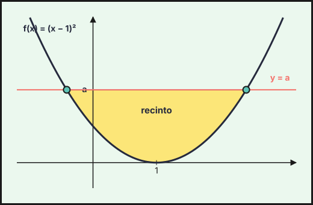
0), con los cortes en x=1±√a">b) Con \(t=x-1\): \[A=\int_{-\sqrt a}^{\sqrt a}\big(a-t^2\big)dt=2\left[at-\frac{t^3}{3}\right]_0^{\sqrt a}=\frac43a^{3/2}.\] \(\dfrac43a^{3/2}=\dfrac43\Rightarrow\mathbf{a=1}\).
Ejercicio 3 · Ordinaria · Suplente 1 2025 · Bloque optativo 1 · (2,5 puntos) · Examen A · Examen B
Considera la función
\[f(x)=\begin{cases}x\operatorname{sen}(2x) & \text{si } x\le 0\\\cos(\pi x)-1 & \text{si } x>0\end{cases}\]
Calcula \(\displaystyle\int_{-\pi/4}^{1}f(x)\,dx\).
Tramo \(x\le0\) (por partes): \(\displaystyle\int_{-\pi/4}^{0}x\operatorname{sen}(2x)dx=\Big[-\dfrac{x\cos2x}{2}+\dfrac{\operatorname{sen}2x}{4}\Big]_{-\pi/4}^{0}=0-\Big(0-\dfrac14\Big)=\dfrac14\).
Tramo \(x>0\): \(\displaystyle\int_0^1(\cos\pi x-1)dx=\Big[\dfrac{\operatorname{sen}\pi x}{\pi}-x\Big]_0^1=-1\).
\[\int_{-\pi/4}^1f=\frac14-1=\mathbf{-\frac34}.\]
Ordinaria · Suplente 2 2025
Ejercicio 2 · Ordinaria · Suplente 2 2025 · Bloque optativo 1 · (2,5 puntos) · Examen A · Examen B
Calcula \(\displaystyle\int_{\sqrt{3}}^{2}\dfrac{4x}{x^{4}-6x^{2}+10}\,dx\). (Sugerencia: efectúa el cambio de variable \(t=x^{2}-3\)).
Con \(t=x^2-3\), \(dt=2x\,dx\), \(4x\,dx=2\,dt\). Además \(x^4-6x^2+10=(x^2-3)^2+1=t^2+1\). Límites: \(x=\sqrt3\to t=0\), \(x=2\to t=1\). \[\int_0^1\frac{2\,dt}{t^2+1}=2\big[\operatorname{arctg}t\big]_0^1=\mathbf{\frac\pi2}.\]
Ejercicio 3 · Ordinaria · Suplente 2 2025 · Bloque optativo 1 · (2,5 puntos) · Examen A · Examen B
Sean las funciones \(f,g:\mathbb{R}\to\mathbb{R}\) definidas por \(f(x)=x^{3}-x\) y \(g(x)=-x^{2}+1\).
Halla los puntos de corte (abscisas donde se obtienen y valores que se alcanzan) de las gráficas de \(f\) y \(g\). Realiza un esbozo del recinto acotado y limitado por dichas gráficas. (1 punto)
Calcula el área del recinto acotado y limitado por las gráficas de \(f\) y \(g\). (1,5 puntos)
a) \(x^3-x=-x^2+1\Rightarrow x^3+x^2-x-1=(x+1)^2(x-1)=0\). Cortes en \(x=-1\) (doble: las gráficas son tangentes) y \(x=1\): puntos \((-1,0)\) y \((1,0)\).
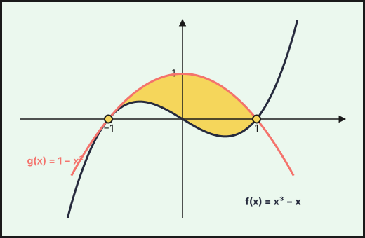
Esbozo: \(g\) es una parábola con vértice \((0,1)\) y cortes con \(OX\) en \(\pm1\); \(f\) es una cúbica que pasa por \((-1,0)\), \((0,0)\), \((1,0)\) (máximo local en \(x=-1/\sqrt3\)). En \((-1,1)\) la parábola queda por encima de la cúbica.
b) \(g-f=-(x-1)(x+1)^2\ge0\) en \([-1,1]\): \[A=\int_{-1}^{1}(-x^3-x^2+x+1)\,dx=2\int_0^1(-x^2+1)\,dx=2\cdot\frac23=\mathbf{\frac43}\ u^2.\]
Extraordinaria 2025
Ejercicio 2 · Extraordinaria 2025 · Bloque optativo 1 · (2,5 puntos) · PDF del examen
Considera la función \(f:\mathbb{R}\to\mathbb{R}\) definida por \(f(x)=\dfrac{1}{x^{2}+2x+2}\). Calcula una primitiva de \(f\) cuya gráfica pase por el punto \(\left(0,\dfrac{\pi}{4}\right)\).
Completando cuadrados: \(x^2+2x+2=(x+1)^2+1\), luego \[F(x)=\int\frac{dx}{(x+1)^2+1}=\operatorname{arctg}(x+1)+C.\] \(F(0)=\operatorname{arctg}1+C=\dfrac\pi4+C=\dfrac\pi4\Rightarrow C=0\).
\(F(x)=\operatorname{arctg}(x+1)\).
Ejercicio 3 · Extraordinaria 2025 · Bloque optativo 1 · (2,5 puntos) · PDF del examen
Calcula el valor de \(k\) para que \(\displaystyle\int_{1}^{3}e^{x-k}(x-2)\,dx=2\).
Por partes con \(u=x-2\), \(dv=e^{x}dx\): \[\int e^{x-k}(x-2)\,dx=e^{-k}\big[(x-2)e^{x}-e^{x}\big]=e^{-k}(x-3)e^{x}.\] \[\int_1^3=e^{-k}\big[0-(-2e)\big]=2e^{1-k}=2\;\Rightarrow\;e^{1-k}=1\;\Rightarrow\;\mathbf{k=1}.\]
Extraordinaria · Suplente 1 2025
Ejercicio 1 · Extraordinaria · Suplente 1 2025 · Parte obligatoria · (2,5 puntos) · PDF del examen
Sea \(f:\mathbb{R}\to\mathbb{R}\) la función definida por \(f(x)=\dfrac{x^{3}+1}{x^{2}+1}\). Calcula una primitiva de \(f\) cuya gráfica pase por el punto \((0,5)\).
Dividiendo: \(\dfrac{x^3+1}{x^2+1}=x-\dfrac{x-1}{x^2+1}=x-\dfrac{x}{x^2+1}+\dfrac{1}{x^2+1}\).
\[F(x)=\int f=\frac{x^2}{2}-\frac12\ln(x^2+1)+\operatorname{arctg}x+C.\]
\(F(0)=C=5\). \(F(x)=\dfrac{x^2}{2}-\dfrac12\ln(x^2+1)+\operatorname{arctg}x+5\).
Extraordinaria · Suplente 2 2025
Ejercicio 6 · Extraordinaria · Suplente 2 2025 · Bloque optativo 3 · (2,5 puntos) · PDF del examen
Considera las funciones \(f,g:\mathbb{R}\to\mathbb{R}\) definidas por \(f(x)=-e^{x}\) y \(g(x)=-e^{-x}\).
Esboza las gráficas de dichas funciones. (1 punto)
Calcula la suma de las áreas de los recintos acotados y limitados por las gráficas de dichas funciones y las rectas \(x=-1\) y \(x=1\). (1,5 puntos)
a) Ambas son negativas: \(f=-e^x\) es creciente y tiende a \(0\) en \(-\infty\); \(g=-e^{-x}\) es decreciente y tiende a \(0\) en \(+\infty\). Ambas pasan por \((0,-1)\) (único corte) y están por debajo del eje \(OX\); \(g\) queda por encima de \(f\) para \(x>0\) y por debajo para \(x<0\).
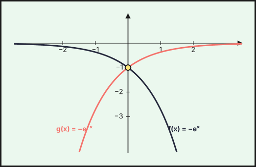
b) Por simetría respecto del eje \(OY\): \[A=2\int_0^1\big(-e^{-x}+e^{x}\big)dx=2\big[e^{x}+e^{-x}\big]_0^1=\mathbf{2\left(e+\dfrac1e-2\right)}\approx2{,}17\ u^2.\]
2024
Ordinaria 2024
Ejercicio 3 · Ordinaria 2024 · Bloque B · (2,5 puntos) · Examen A · Examen B
Considera la función \(f\) definida por \(f(x)=\dfrac{x^{3}+2}{x^{2}-1}\), para \(x\neq -1\), \(x\neq 1\). Calcula una primitiva de \(f\) cuya gráfica pase por el punto \((0,1)\).
\(\dfrac{x^3+2}{x^2-1}=x+\dfrac{x+2}{(x-1)(x+1)}=x+\dfrac{3/2}{x-1}-\dfrac{1/2}{x+1}\).
\(F(x)=\dfrac{x^2}2+\dfrac32\ln|x-1|-\dfrac12\ln|x+1|+C\). En el intervalo \((-1,1)\), que contiene a \(x=0\): \(F(0)=C=1\).
\[\mathbf{F(x)=\frac{x^2}2+\frac32\ln|x-1|-\frac12\ln|x+1|+1}\]
Ejercicio 4 · Ordinaria 2024 · Bloque B · (2,5 puntos) · Examen A · Examen B
Halla la función \(f:\mathbb{R}\to\mathbb{R}\) tal que \(f''(x)=x\cos(x)\) y cuya gráfica pasa por los puntos \(\left(0,\dfrac{\pi}{2}\right)\) y \((\pi,2\pi)\).
Por partes: \(f'(x)=\int x\cos x\,dx=x\operatorname{sen}x+\cos x+C_1\), y
\[f(x)=\int(x\operatorname{sen}x+\cos x)\,dx+C_1x=-x\cos x+2\operatorname{sen}x+C_1x+C_2.\]
\(f(0)=C_2=\dfrac\pi2\). \(f(\pi)=\pi+C_1\pi+\dfrac\pi2=2\pi\Rightarrow C_1=\dfrac12\).
\[\mathbf{f(x)=-x\cos x+2\operatorname{sen}x+\frac x2+\frac\pi2}\]
Ordinaria · Reserva 2024
Ejercicio 3 · Ordinaria · Reserva 2024 · Bloque B · (2,5 puntos) · Examen A · Examen B
Considera la función \(f:\mathbb{R}\to\mathbb{R}\) definida por \(f(x)=x^{3}-6x^{2}+8x\).
Calcula los puntos de corte de la gráfica de \(f\) con los ejes de coordenadas y esboza dicha gráfica. (1 punto)
Calcula la suma de las áreas de los recintos acotados y limitados por la gráfica de \(f\) y el eje de abscisas. (1,5 puntos)
a) \(f(x)=x(x-2)(x-4)\). Cortes con el eje \(OX\): \((0,0)\), \((2,0)\), \((4,0)\); con el eje \(OY\): \((0,0)\). Esbozo: cúbica con \(f\to-\infty\) a la izquierda y \(+\infty\) a la derecha; \(f>0\) en \((0,2)\) (máximo local en \(x=2-\tfrac{2}{\sqrt3}\approx0{,}85\)) y \(f<0\) en \((2,4)\) (mínimo local en \(x=2+\tfrac{2}{\sqrt3}\approx3{,}15\)).
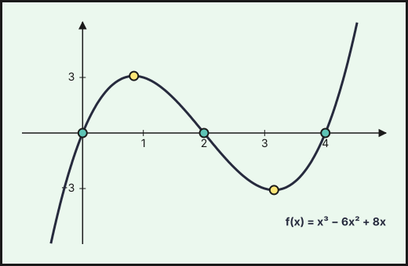
b) Con \(F(x)=\dfrac{x^4}{4}-2x^3+4x^2\): \(\int_0^2f=F(2)-F(0)=4\) y \(\int_2^4f=F(4)-F(2)=0-4=-4\).
\[A=|4|+|-4|=\mathbf{8\ u^2}.\]
Ejercicio 4 · Ordinaria · Reserva 2024 · Bloque B · (2,5 puntos) · Examen A · Examen B
Calcula \(\displaystyle\int\dfrac{e^{3x}-1}{e^{x}-3}\,dx\). (Sugerencia: efectúa el cambio de variable \(t=e^{x}\).)
Con \(t=e^x\), \(dx=\dfrac{dt}{t}\):
\[\int\frac{t^3-1}{t(t-3)}\,dt=\int\left(t+3+\frac{9t-1}{t(t-3)}\right)dt,\qquad\frac{9t-1}{t(t-3)}=\frac{1/3}{t}+\frac{26/3}{t-3}.\]
\[\mathbf{\int\frac{e^{3x}-1}{e^x-3}\,dx=\frac{e^{2x}}2+3e^x+\frac x3+\frac{26}3\ln|e^x-3|+C}\]
Ordinaria · Suplente 2024
Ejercicio 3 · Ordinaria · Suplente 2024 · Bloque B · (2,5 puntos) · Examen A · Examen B
Halla la función \(f:(2,+\infty)\to\mathbb{R}\) que pasa por el punto \((3,-4\ln 5)\) y verifica \(f'(x)=\dfrac{3x^{2}+4x+12}{x^{2}-4}\), donde \(\ln\) denota la función logaritmo neperiano.
\[\frac{3x^2+4x+12}{x^2-4}=3+\frac{4x+24}{(x-2)(x+2)}=3+\frac{8}{x-2}-\frac{4}{x+2}.\]
\(f(x)=3x+8\ln(x-2)-4\ln(x+2)+C\). Condición \(f(3)=-4\ln5\): \(9+0-4\ln5+C=-4\ln5\Rightarrow C=-9\).
\[\mathbf{f(x)=3x-9+8\ln(x-2)-4\ln(x+2)}\]
Ejercicio 4 · Ordinaria · Suplente 2024 · Bloque B · (2,5 puntos) · Examen A · Examen B
Sea \(f:\mathbb{R}\to\mathbb{R}\) la función definida por \(f(x)=(x^{2}-3x+5)e^{x}\). Halla una primitiva de \(f\) cuya gráfica pase por el punto \((0,5)\).
Por partes (o ajustando \(F=(x^2+px+q)e^x\)): \(F'=\big(x^2+(p+2)x+(p+q)\big)e^x\), que debe ser \((x^2-3x+5)e^x\): \(p=-5\), \(q=10\).
\(F(x)=(x^2-5x+10)e^x+C\) y \(F(0)=10+C=5\Rightarrow C=-5\).
\[\mathbf{F(x)=(x^2-5x+10)e^x-5}\]
Extraordinaria 2024
Ejercicio 3 · Extraordinaria 2024 · Bloque B · (2,5 puntos) · PDF del examen
Sean \(f,g:\mathbb{R}\to\mathbb{R}\) las funciones definidas por \(f(x)=-x^{2}+7\) y \(g(x)=|x^{2}-1|\).
Halla los puntos de intersección de las gráficas de \(f\) y \(g\). Realiza un esbozo del recinto acotado y limitado por dichas gráficas. (1 punto)
Calcula el área de dicho recinto. (1,5 puntos)
a) Si \(|x|\ge1\): \(7-x^2=x^2-1\Rightarrow x=\pm2\). Si \(|x|<1\): \(7-x^2=1-x^2\) es imposible.
Puntos de corte: \((-2,3)\) y \((2,3)\). Esbozo: parábola invertida de vértice \((0,7)\) por encima de la gráfica de \(g\) (una “W” con mínimos \(0\) en \(x=\pm1\), máximo local \(1\) en \(x=0\) y ramas hacia arriba), entre \(x=-2\) y \(x=2\).
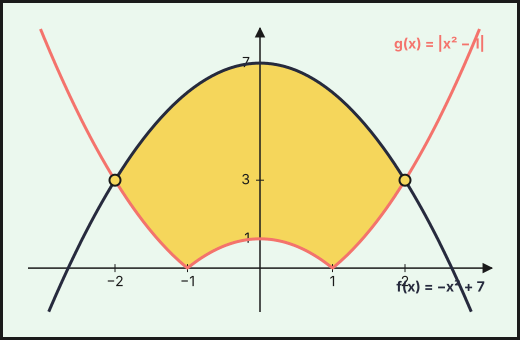
b) Por simetría y con \(f\ge g\) en \([-2,2]\):
\[A=2\left[\int_0^2(7-x^2)\,dx-\int_0^1(1-x^2)\,dx-\int_1^2(x^2-1)\,dx\right]=2\left[\frac{34}{3}-\frac23-\frac43\right]=\mathbf{\frac{56}{3}\ u^2}.\]
Ejercicio 4 · Extraordinaria 2024 · Bloque B · (2,5 puntos) · PDF del examen
Halla \(\displaystyle\int_{0}^{\pi/2}e^{x}\cos(x)\,dx\).
Por partes dos veces (o la fórmula de \(\int e^x\cos x\)): \(\int e^x\cos x\,dx=\dfrac{e^x(\operatorname{sen}x+\cos x)}{2}\).
\[\int_0^{\pi/2}e^x\cos x\,dx=\frac{e^{\pi/2}(1+0)-(0+1)}{2}=\mathbf{\frac{e^{\pi/2}-1}{2}}.\]
Extraordinaria · Reserva 2024
Ejercicio 3 · Extraordinaria · Reserva 2024 · Bloque B · (2,5 puntos) · PDF del examen
Considera la función
\[f(x)=\begin{cases}1-e^{x} & \text{si } x\le 0\\ x\cos(x) & \text{si } x>0\end{cases}\]
Calcula \(\displaystyle\int_{-\pi}^{\pi}f(x)\,dx\).
Se parte en el \(0\):
\[\int_{-\pi}^{0}(1-e^x)\,dx=\Big[x-e^x\Big]_{-\pi}^{0}=-1-(-\pi-e^{-\pi})=\pi-1+e^{-\pi}.\]
\(\int_0^{\pi}x\cos x\,dx\) por partes (\(u=x\), \(dv=\cos x\,dx\)): \(\big[x\operatorname{sen}x+\cos x\big]_0^{\pi}=-1-1=-2\).
\[\int_{-\pi}^{\pi}f(x)\,dx=\mathbf{\pi-3+e^{-\pi}}\approx 0{,}185.\]
Ejercicio 4 · Extraordinaria · Reserva 2024 · Bloque B · (2,5 puntos) · PDF del examen
Calcula una primitiva de la función \(f:(1,+\infty)\to\mathbb{R}\) definida por \(f(x)=(x-1)^{2}\ln\dfrac{\sqrt{x-1}}{2}\) cuya gráfica pase por el punto \(\left(5,-\dfrac72\right)\), donde \(\ln\) denota la función logaritmo neperiano. (Sugerencia: efectúa el cambio de variable \(x-1=t^{2}\)).
Con \(x-1=t^2\), \(dx=2t\,dt\), \(\ln\dfrac{\sqrt{x-1}}{2}=\ln\dfrac t2\):
\[\int (x-1)^2\ln\frac{\sqrt{x-1}}2\,dx=2\int t^5\ln\frac t2\,dt=\frac{t^6}{3}\ln\frac t2-\int\frac{t^5}{3}\,dt=\frac{t^6}{3}\ln\frac t2-\frac{t^6}{18}+C.\]
Deshaciendo el cambio: \(F(x)=\dfrac{(x-1)^3}{3}\ln\dfrac{\sqrt{x-1}}2-\dfrac{(x-1)^3}{18}+C\).
\(F(5)=\frac{64}{3}\ln1-\frac{64}{18}+C=-\frac{32}{9}+C=-\frac72\Rightarrow C=\frac1{18}\).
\[\mathbf{F(x)=\frac{(x-1)^3}{3}\ln\frac{\sqrt{x-1}}2-\frac{(x-1)^3}{18}+\frac1{18}}\]
Extraordinaria · Suplente 2024
Ejercicio 3 · Extraordinaria · Suplente 2024 · Bloque B · (2,5 puntos) · PDF del examen
Considera la función \(f:\mathbb{R}\to\mathbb{R}\) definida por
\[f(x)=\int_{0}^{x}\cos(t)\operatorname{sen}^{2}(t)\,dt.\]
Determina las ecuaciones de la recta tangente y de la recta normal a la gráfica de \(f\) en el punto de abscisa \(x=\dfrac{\pi}{4}\).
Relacionado también con: Derivadas.
\(f'(x)=\cos x\operatorname{sen}^2x\) (teorema fundamental del cálculo) y \(f(x)=\dfrac{\operatorname{sen}^3x}{3}\).
En \(x=\pi/4\): \(f\!\left(\frac\pi4\right)=\dfrac{(\sqrt2/2)^3}{3}=\dfrac{\sqrt2}{12}\) y \(f'\!\left(\frac\pi4\right)=\dfrac{\sqrt2}2\cdot\dfrac12=\dfrac{\sqrt2}{4}\).
Tangente: \(y=\dfrac{\sqrt2}{12}+\dfrac{\sqrt2}{4}\left(x-\dfrac\pi4\right)\).
Normal: \(y=\dfrac{\sqrt2}{12}-2\sqrt2\left(x-\dfrac\pi4\right)\) (pendiente \(-1/f'=-4/\sqrt2=-2\sqrt2\)).
Ejercicio 4 · Extraordinaria · Suplente 2024 · Bloque B · (2,5 puntos) · PDF del examen
Calcula \(\displaystyle\int\dfrac{dx}{\sqrt{4+4e^{x}}}\). (Sugerencia: efectúa el cambio de variable \(t=\sqrt{1+e^{x}}\)).
Con \(t=\sqrt{1+e^x}\): \(e^x=t^2-1\), \(dx=\dfrac{2t}{t^2-1}\,dt\) y \(\sqrt{4+4e^x}=2t\).
\[\int\frac{dx}{\sqrt{4+4e^x}}=\int\frac{1}{2t}\cdot\frac{2t}{t^2-1}\,dt=\int\frac{dt}{t^2-1}=\frac12\ln\left|\frac{t-1}{t+1}\right|+C.\]
\[\mathbf{\frac12\ln\frac{\sqrt{1+e^x}-1}{\sqrt{1+e^x}+1}+C}\]
2023
Ordinaria 2023
Ejercicio 3 · Ordinaria 2023 · Bloque A · (2,5 puntos) · Examen A · Examen B
Considera la función \(f:\mathbb{R}\to\mathbb{R}\), definida por \(f(x)=x\,|x-1|\). Calcula el área del recinto limitado por la gráfica de dicha función y su recta tangente en el punto de abscisa \(x=0\).
Relacionado también con: Derivadas.
\(f(x)=x(1-x)\) para \(x\le1\) y \(f(x)=x(x-1)\) para \(x>1\). En \(x=0\): \(f(0)=0\), \(f'(0)=1\), tangente \(y=x\).
Cortes con \(f\): para \(x\le1\), \(x-x^{2}=x\Rightarrow x=0\); para \(x>1\), \(x^{2}-x=x\Rightarrow x=2\). La tangente queda por encima de \(f\) en \([0,2]\):
\[A=\int_0^1x^{2}dx+\int_1^2(2x-x^{2})dx=\dfrac13+\dfrac23.\]
Área \(=1\ \text{u}^2\).
Ordinaria · Reserva 2023
Ejercicio 3 · Ordinaria · Reserva 2023 · Bloque A · (2,5 puntos) · Examen A · Examen B
Calcula \(\displaystyle\int_{6}^{12}\dfrac{1}{9-x^{2}}\,dx\).
\(\dfrac1{9-x^{2}}=\dfrac16\left(\dfrac1{3-x}+\dfrac1{3+x}\right)\), cuya primitiva es \(\dfrac16\ln\left|\dfrac{3+x}{3-x}\right|\).
\[\int_6^{12}\dfrac{dx}{9-x^{2}}=\dfrac16\left(\ln\dfrac{15}{9}-\ln\dfrac93\right)=\dfrac16\ln\dfrac{5/3}{3}.\]
Resultado: \(\dfrac16\ln\dfrac59\approx-0{,}098\).
Ejercicio 4 · Ordinaria · Reserva 2023 · Bloque A · (2,5 puntos) · Examen A · Examen B
Considera la función \(f:\mathbb{R}\to\mathbb{R}\) definida por \(f(x)=x^{2}+1\).
Determina el punto de la gráfica de \(f\) en el que la recta tangente es \(y=4x-3\). (0,75 puntos)
Haz un esbozo del recinto limitado por la gráfica de \(f\), la recta \(y=4x-3\) y el eje de ordenadas. Calcula el área del recinto indicado. (1,75 puntos)
Relacionado también con: Derivadas.
a) \(f'(x)=2x=4\Rightarrow x=2\), \(f(2)=5\) (y la recta da \(4\cdot2-3=5\)).
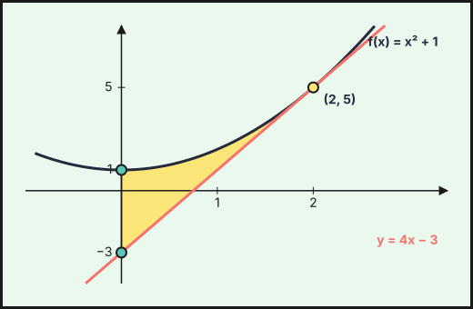
Punto \((2,5)\).
b) La parábola \(y=x^{2}+1\) queda por encima de la recta, que es tangente en \(x=2\). El recinto está entre \(x=0\) (eje de ordenadas) y \(x=2\):
\[A=\int_0^2\left[(x^{2}+1)-(4x-3)\right]dx=\int_0^2(x-2)^{2}dx=\left[\dfrac{(x-2)^{3}}3\right]_0^2=\dfrac83.\]
Área \(=\dfrac83\ \text{u}^2\).
Ordinaria · Suplente 2023
Ejercicio 3 · Ordinaria · Suplente 2023 · Bloque A · (2,5 puntos) · Examen A · Examen B
Determina la función \(f:(0,+\infty)\to\mathbb{R}\), sabiendo que es dos veces derivable, su gráfica pasa por el punto \((1,0)\), \(f'(e)=e\) y \(f''(x)=2\ln(x)+1\), para todo \(x>0\) (\(\ln\) denota la función logaritmo neperiano).
\(f'(x)=\int(2\ln x+1)dx=2x\ln x-x+C\). \(f'(e)=2e-e+C=e\Rightarrow C=0\).
\(f(x)=\int(2x\ln x-x)dx=x^{2}\ln x-\dfrac{x^{2}}2-\dfrac{x^{2}}2+K=x^{2}\ln x-x^{2}+K\).
\(f(1)=-1+K=0\Rightarrow K=1\).
\(f(x)=x^{2}\ln x-x^{2}+1\).
Ejercicio 4 · Ordinaria · Suplente 2023 · Bloque A · (2,5 puntos) · Examen A · Examen B
Considera las funciones \(f,g:\mathbb{R}\to\mathbb{R}\) definidas por \(f(x)=|x^{2}-1|\) y \(g(x)=x+5\).
Calcula los puntos de corte de las gráficas de ambas funciones y esboza el recinto que determinan. (1,25 puntos)
Determina el área del recinto anterior. (1,25 puntos)
a) Si \(|x|\ge1\): \(x^{2}-1=x+5\Rightarrow x=-2,\ 3\). Si \(|x|<1\): \(1-x^{2}=x+5\) no tiene solución real.
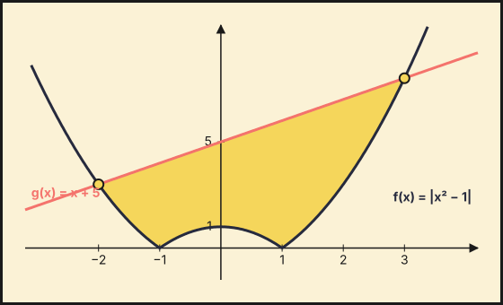
Puntos de corte: \((-2,3)\) y \((3,8)\). El recinto está limitado por arriba por la recta \(y=x+5\) y por abajo por \(|x^{2}-1|\) (dos arcos de parábola hacia arriba y un arco invertido entre \(-1\) y \(1\)).
b) \[A=\int_{-2}^{-1}(x+5-x^{2}+1)dx+\int_{-1}^{1}(x+5-1+x^{2})dx+\int_{1}^{3}(x+5-x^{2}+1)dx=\dfrac{13}6+\dfrac{26}3+\dfrac{22}3.\]
Área \(=\dfrac{109}6\ \text{u}^2\).
Extraordinaria 2023
Ejercicio 3 · Extraordinaria 2023 · Bloque A · (2,5 puntos) · PDF del examen
Calcula \(a\) con \(0<a<1\), tal que \(\displaystyle\int_{a}^{1}\dfrac{\ln(x)}{x}\,dx+2=0\) (\(\ln\) denota la función logaritmo neperiano).
\[\int_a^1\dfrac{\ln x}{x}dx=\left[\dfrac{\ln^{2}x}{2}\right]_a^1=-\dfrac{\ln^{2}a}{2}.\]
\(-\dfrac{\ln^{2}a}{2}+2=0\Rightarrow\ln^{2}a=4\Rightarrow\ln a=\pm2\). Con \(0<a<1\), \(\ln a<0\):
\(a=e^{-2}\).
Ejercicio 4 · Extraordinaria 2023 · Bloque A · (2,5 puntos) · PDF del examen
Considera las funciones \(f:\mathbb{R}\to\mathbb{R}\) y \(g:\mathbb{R}-\{0\}\to\mathbb{R}\) definidas por \(f(x)=5-x^{2}\) y \(g(x)=\dfrac{4}{x^{2}}\).
Esboza las gráficas de las dos funciones y calcula los puntos de corte entre ellas. (1,25 puntos)
Calcula la suma de las áreas de los recintos limitados por las gráficas de \(f\) y \(g\). (1,25 puntos)
a) \(f\) es una parábola de vértice \((0,5)\) hacia abajo; \(g\) es positiva, par, con asíntota vertical \(x=0\) y horizontal \(y=0\).
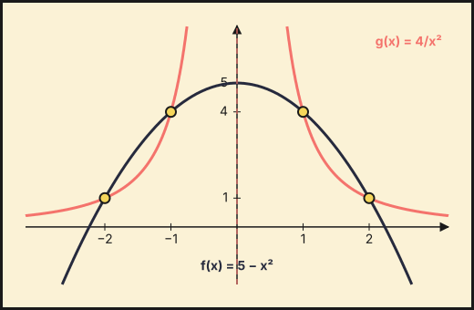
\(5-x^{2}=\dfrac4{x^{2}}\Rightarrow x^{4}-5x^{2}+4=0\Rightarrow x^{2}=1,\,4\).
Puntos de corte: \((\pm1,4)\) y \((\pm2,1)\).
b) Los recintos acotados son los de \(1\le|x|\le2\) (entre \(-1\) y \(1\), \(g\) no está acotada). Por simetría:
\[2\int_1^2\left(5-x^{2}-\dfrac4{x^{2}}\right)dx=2\left[5x-\dfrac{x^{3}}3+\dfrac4x\right]_1^2=2\cdot\dfrac23.\]
Suma de áreas \(=\dfrac43\ \text{u}^2\).
Extraordinaria · Reserva 2023
Ejercicio 3 · Extraordinaria · Reserva 2023 · Bloque A · (2,5 puntos) · PDF del examen
Sabiendo que \(F:\mathbb{R}\to\mathbb{R}\) definida por \(F(x)=e^{x^{2}}\) es una primitiva de \(f\).
Comprueba que \(f\) es creciente. (1,25 puntos)
Calcula el área del recinto limitado por la gráfica de la función \(f\), el eje de abscisas y la recta \(x=1\). (1,25 puntos)
Relacionado también con: Aplicaciones de la derivada.
Como \(F\) es primitiva de \(f\), \(f(x)=F'(x)=2x\,e^{x^{2}}\).
a) \(f'(x)=(2+4x^{2})e^{x^{2}}>0\) para todo \(x\), luego \(f\) es creciente.
b) \(f(0)=0\) y \(f\ge 0\) en \([0,1]\), así que el recinto está entre \(x=0\) y \(x=1\):
\[\int_0^1 2x\,e^{x^{2}}dx=\left[e^{x^{2}}\right]_0^1=e-1.\]
Área \(=e-1\approx 1{,}72\ \text{u}^2\).
Ejercicio 4 · Extraordinaria · Reserva 2023 · Bloque A · (2,5 puntos) · PDF del examen
Considera la función \(f:[0,+\infty)\to\mathbb{R}\) definida por \(f(x)=\cos(\sqrt{x})\). Calcula, si es posible, una primitiva de \(f\) cuya gráfica pase por el punto \((0,5)\). Sugerencia: haz el cambio \(t=\sqrt{x}\).
Con \(t=\sqrt{x}\), \(x=t^{2}\), \(dx=2t\,dt\): \(\int\cos\sqrt{x}\,dx=\int 2t\cos t\,dt\).
Por partes: \(=2t\operatorname{sen}t+2\cos t+C=2\sqrt{x}\operatorname{sen}\sqrt{x}+2\cos\sqrt{x}+C\).
Condición \(F(0)=5\): \(2+C=5\Rightarrow C=3\).
\(F(x)=2\sqrt{x}\operatorname{sen}\sqrt{x}+2\cos\sqrt{x}+3\).
Extraordinaria · Suplente 2023
Ejercicio 3 · Extraordinaria · Suplente 2023 · Bloque A · (2,5 puntos) · PDF del examen
Calcula una primitiva de la función \(f:[0,+\infty)\to\mathbb{R}\) definida por \(f(x)=\operatorname{arctg}(\sqrt{x})\) cuya gráfica pase por el punto \((0,1)\) (\(\operatorname{arctg}\) denota la función arco tangente). Sugerencia: efectúa el cambio \(x=t^{2}\).
Con \(x=t^{2}\), \(dx=2t\,dt\): \(\int\operatorname{arctg}\sqrt{x}\,dx=\int2t\operatorname{arctg}t\,dt\).
Por partes: \(=t^{2}\operatorname{arctg}t-\int\dfrac{t^{2}}{1+t^{2}}dt=t^{2}\operatorname{arctg}t-t+\operatorname{arctg}t+C\).
Deshaciendo: \(F(x)=(x+1)\operatorname{arctg}\sqrt{x}-\sqrt{x}+C\). Como \(F(0)=C=1\):
\(F(x)=(x+1)\operatorname{arctg}\sqrt{x}-\sqrt{x}+1\).
Ejercicio 4 · Extraordinaria · Suplente 2023 · Bloque A · (2,5 puntos) · PDF del examen
Considera la función \(f:(-1,+\infty)\to\mathbb{R}\), definida por \(f(x)=\ln(x+1)\), donde \(\ln\) denota el logaritmo neperiano. Calcula el área del recinto limitado por la gráfica de \(f\), el eje de abscisas y la recta \(x=e-1\).
\(\ln(x+1)=0\iff x=0\), y \(f\ge0\) en \([0,e-1]\). Una primitiva es \((x+1)\ln(x+1)-x\) (por partes).
\[A=\int_0^{e-1}\ln(x+1)\,dx=\Big[(x+1)\ln(x+1)-x\Big]_0^{e-1}=e-(e-1)-0.\]
Área \(=1\ \text{u}^2\).
2022
Ordinaria 2022
Ejercicio 3 · Ordinaria 2022 · Bloque A · (2,5 puntos) · Examen
Sea \(f\) la función definida por \(f(x)=\begin{cases}2x+4 & \text{si } x<0\\(x-2)^{2} & \text{si } x\ge 0\end{cases}\)
Calcula los puntos de corte de la gráfica de \(f\) con el eje de abscisas y esboza la gráfica de la función. (1 punto)
Halla el área del recinto limitado por la gráfica de \(f\) y por el eje de abscisas. (1,5 puntos)
a) \(2x+4=0\Rightarrow x=-2\); \((x-2)^2=0\Rightarrow x=2\) (raíz doble, tangente al eje).
Cortes con el eje: \((-2,0)\) y \((2,0)\). La gráfica: recta de pendiente 2 desde \((-2,0)\) hasta \((0,4)\) y parábola de vértice \((2,0)\) desde \((0,4)\).
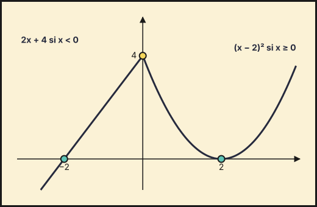
b) \(A=\displaystyle\int_{-2}^0(2x+4)\,dx+\int_0^2(x-2)^2\,dx=4+\tfrac83\).
\(A=\dfrac{20}{3}\) u\(^2\).
Ejercicio 4 · Ordinaria 2022 · Bloque A · (2,5 puntos) · Examen
Considera la función \(f\) definida por \(f(x)=\dfrac{x^{3}}{x^{2}-2x+1}\) para \(x\neq 1\). Halla una primitiva de \(f\) que pase por el punto \((2,6)\).
Se divide: \(\dfrac{x^3}{(x-1)^2}=x+2+\dfrac{3x-2}{(x-1)^2}=x+2+\dfrac3{x-1}+\dfrac1{(x-1)^2}\). Las primitivas son \[F(x)=\frac{x^2}2+2x+3\ln|x-1|-\frac1{x-1}+C.\] \(F(2)=2+4+0-1+C=6\Rightarrow C=1\).
\(F(x)=\dfrac{x^2}{2}+2x+3\ln|x-1|-\dfrac{1}{x-1}+1\).
Ordinaria · Reserva 2022
Ejercicio 3 · Ordinaria · Reserva 2022 · Bloque A · (2,5 puntos) · Examen
Considera la función \(f:\mathbb{R}\to\mathbb{R}\) definida por \(f(x)=e^{x}\operatorname{sen}(2x)\). Halla la primitiva de \(f\) cuya gráfica pase por el punto \((0,0)\).
Integrando por partes dos veces, \(\displaystyle\int e^x\operatorname{sen}(2x)\,dx=\frac{e^x(\operatorname{sen}2x-2\cos2x)}{5}+C\). La condición \(F(0)=0\) da \(\tfrac{-2}{5}+C=0\).
\(F(x)=\dfrac{e^x\left(\operatorname{sen}(2x)-2\cos(2x)\right)}{5}+\dfrac25\).
Ejercicio 4 · Ordinaria · Reserva 2022 · Bloque A · (2,5 puntos) · Examen
Considera las funciones \(f,g:\mathbb{R}\to\mathbb{R}\) definidas por \(f(x)=1-x^{2}\) y \(g(x)=2x^{2}\).
Calcula los puntos de corte de las gráficas de \(f\) y \(g\). Esboza el recinto que delimitan. (1,25 puntos)
Determina el área del recinto anterior. (1,25 puntos)
a) \(1-x^2=2x^2\Rightarrow x^2=\tfrac13\).
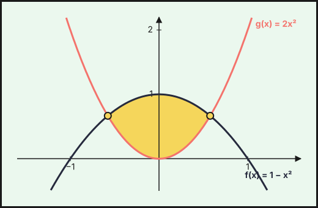
Puntos de corte: \(\left(\pm\tfrac{\sqrt3}{3},\tfrac23\right)\). El recinto está entre la parábola \(f\) (hacia abajo, vértice \((0,1)\)) y la parábola \(g\) (hacia arriba, vértice \((0,0)\)): \(f\ge g\) para \(|x|\le\tfrac{\sqrt3}{3}\).
b) \(A=\displaystyle\int_{-\sqrt3/3}^{\sqrt3/3}(1-3x^2)\,dx=2\left[x-x^3\right]_0^{\sqrt3/3}=2\left(\tfrac{\sqrt3}{3}-\tfrac{\sqrt3}{9}\right)\).
\(A=\dfrac{4\sqrt3}{9}\) u\(^2\).
Ordinaria · Suplente 2022
Ejercicio 3 · Ordinaria · Suplente 2022 · Bloque A · (2,5 puntos) · Examen
Considera la función \(F:[0,2\pi]\to\mathbb{R}\) definida por \(F(x)=\displaystyle\int_{0}^{x}2t\cos(t)\,dt\).
Determina los intervalos de crecimiento y de decrecimiento de \(F\). (1 punto)
Halla la ecuación de la recta tangente a la gráfica de \(F\) en el punto de abscisa \(x=\pi\). (1,5 puntos)
Relacionado también con: Derivadas, Aplicaciones de la derivada.
Por el teorema fundamental del cálculo, \(F'(x)=2x\cos x\) en \([0,2\pi]\).
a) En \((0,2\pi)\) el signo de \(F'\) es el de \(\cos x\): positivo en \(\left(0,\tfrac\pi2\right)\) y \(\left(\tfrac{3\pi}{2},2\pi\right)\); negativo en \(\left(\tfrac\pi2,\tfrac{3\pi}2\right)\).
\(F\) crece en \(\left(0,\tfrac\pi2\right)\cup\left(\tfrac{3\pi}2,2\pi\right)\) y decrece en \(\left(\tfrac\pi2,\tfrac{3\pi}2\right)\).
b) \(F(\pi)=\left[2t\operatorname{sen}t+2\cos t\right]_0^\pi=-2-2=-4\) (por partes) y \(F'(\pi)=-2\pi\).
Tangente: \(y=-4-2\pi(x-\pi)\), es decir, \(y=-2\pi x+2\pi^2-4\).
Ejercicio 4 · Ordinaria · Suplente 2022 · Bloque A · (2,5 puntos) · Examen
Calcula \(\displaystyle\int_{0}^{1}x\operatorname{arctg}(x)\,dx\) (donde \(\operatorname{arctg}\) denota la función arcotangente).
Por partes, \(u=\operatorname{arctg}x\), \(dv=x\,dx\): \[\int_0^1x\operatorname{arctg}x\,dx=\left[\tfrac{x^2}{2}\operatorname{arctg}x\right]_0^1-\frac12\int_0^1\frac{x^2}{1+x^2}\,dx=\frac\pi8-\frac12\big[x-\operatorname{arctg}x\big]_0^1.\]
\(\dfrac\pi4-\dfrac12\).
Extraordinaria 2022
Ejercicio 3 · Extraordinaria 2022 · Bloque A · (2,5 puntos) · Examen
Calcula \(\displaystyle\int_{3}^{8}\dfrac{1}{\sqrt{1+x}-1}\,dx\). (Sugerencia: efectúa el cambio de variable \(t=\sqrt{1+x}-1\).)
Con \(t=\sqrt{1+x}-1\): \(x=(t+1)^2-1\), \(dx=2(t+1)\,dt\); los límites pasan a \(t=1\) (\(x=3\)) y \(t=2\) (\(x=8\)). \[\int_1^2\frac{2(t+1)}{t}\,dt=2\int_1^2\left(1+\frac1t\right)dt=2\big[t+\ln t\big]_1^2=2(1+\ln2).\]
\(2+2\ln2\).
Ejercicio 4 · Extraordinaria 2022 · Bloque A · (2,5 puntos) · Examen
Considera las funciones \(f,g:\mathbb{R}\to\mathbb{R}\) definidas por \(f(x)=x^{3}+2\) y \(g(x)=-x^{2}+2x+2\).
Calcula los puntos de corte de las gráficas de \(f\) y \(g\). Esboza sus gráficas. (1,25 puntos)
Determina el área del recinto limitado por las gráficas de \(f\) y \(g\) en el primer cuadrante. (1,25 puntos)
a) \(x^3+2=-x^2+2x+2\Rightarrow x^3+x^2-2x=x(x-1)(x+2)=0\).
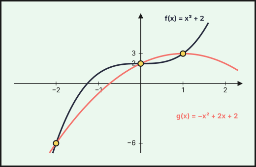
Puntos de corte: \((-2,-6)\), \((0,2)\) y \((1,3)\). \(f\) es una cúbica creciente que pasa por \((0,2)\); \(g\) es una parábola con vértice en \((1,3)\) abierta hacia abajo; ambas se cortan en los tres puntos.
b) En \([0,1]\) se tiene \(g\ge f\) (p. ej. en \(x=\tfrac12\): \(g=\tfrac{11}{4}>f=\tfrac{17}{8}\)): \[A=\int_0^1(-x^3-x^2+2x)\,dx=-\tfrac14-\tfrac13+1.\]
\(A=\tfrac{5}{12}\) u\(^2\).
Extraordinaria · Reserva 2022
Ejercicio 3 · Extraordinaria · Reserva 2022 · Bloque A · (2,5 puntos) · Examen
Considera la función \(f:\mathbb{R}\to\mathbb{R}\) definida por \(f(x)=x^{3}-x\). Calcula el área total de los recintos limitados por la gráfica de la función \(f\) y la recta normal a dicha gráfica en el punto de abscisa \(x=0\).
Relacionado también con: Derivadas.
En \(x=0\): \(f(0)=0\), \(f'(0)=-1\), luego la normal tiene pendiente \(1\): \(y=x\). Cortes con \(f\): \(x^3-x=x\Rightarrow x^3-2x=0\Rightarrow x=0,\ \pm\sqrt2\). Por simetría impar del recinto, el área es el doble de la de \([0,\sqrt2]\), donde la recta está por encima: \[A=2\int_0^{\sqrt2}(2x-x^3)\,dx=2\left[x^2-\tfrac{x^4}{4}\right]_0^{\sqrt2}=2(2-1).\]
\(A=2\) u\(^2\).
Ejercicio 4 · Extraordinaria · Reserva 2022 · Bloque A · (2,5 puntos) · Examen
Calcula \(\displaystyle\int_{0}^{3}\dfrac{x}{\sqrt{1+x}}\,dx\). (Sugerencia: efectúa el cambio de variable \(t=\sqrt{1+x}\).)
Con \(t=\sqrt{1+x}\): \(x=t^2-1\), \(dx=2t\,dt\); los límites pasan a \(t=1\) y \(t=2\). \[\int_1^2\frac{t^2-1}{t}\,2t\,dt=2\int_1^2(t^2-1)\,dt=2\left[\tfrac{t^3}{3}-t\right]_1^2=2\left(\tfrac23+\tfrac23\right).\]
\(\dfrac{8}{3}\).
Extraordinaria · Suplente 2022
Ejercicio 3 · Extraordinaria · Suplente 2022 · Bloque A · (2,5 puntos) · Examen
Calcula \(\displaystyle\int\dfrac{2x^{3}+2x^{2}-2x+7}{x^{2}+x-2}\,dx\).
Se divide: \(\dfrac{2x^3+2x^2-2x+7}{x^2+x-2}=2x+\dfrac{2x+7}{x^2+x-2}\), y como \(x^2+x-2=(x-1)(x+2)\), \[\frac{2x+7}{(x-1)(x+2)}=\frac{3}{x-1}-\frac{1}{x+2}.\] Integrando:
\(x^2+3\ln|x-1|-\ln|x+2|+C\).
Ejercicio 4 · Extraordinaria · Suplente 2022 · Bloque A · (2,5 puntos) · Examen
Considera las funciones \(f,g:\mathbb{R}\to\mathbb{R}\) definidas por \(f(x)=x^{2}\) y \(g(x)=a|x|\), con \(a>0\). Determina el valor de \(a\) para que el área total de los recintos limitados por las gráficas de ambas funciones sea de 9 unidades cuadradas.
Las gráficas se cortan donde \(x^2=a|x|\): \(x=0,\ \pm a\). Por simetría el área total es el doble de la de \([0,a]\), donde \(g\ge f\): \[A=2\int_0^a(ax-x^2)\,dx=2\left[\tfrac{a x^2}{2}-\tfrac{x^3}{3}\right]_0^a=\frac{a^3}{3}=9.\]
\(a=3\).
2021
Ordinaria 2021
Ejercicio 4 · Ordinaria 2021 · Bloque A · (2,5 puntos) · Examen
Considera la función \(F:[0,+\infty)\to\mathbb{R}\) definida por
\[F(x)=\int_{0}^{x}\left(2t+\sqrt{t}\right)dt.\]
Halla la ecuación de la recta tangente a la gráfica de \(F\) en el punto de abscisa \(x=1\).
Relacionado también con: Derivadas.
Por el teorema fundamental del cálculo \(F'(x)=2x+\sqrt x\).
\(F(1)=\displaystyle\int_0^1(2t+\sqrt t)\,dt=\left[t^2+\tfrac23t^{3/2}\right]_0^1=\tfrac53\), y \(F'(1)=3\).
\(y=\dfrac53+3(x-1)\), es decir, \(y=3x-\dfrac43\).
Ordinaria · Reserva 2021
Ejercicio 4 · Ordinaria · Reserva 2021 · Bloque A · (2,5 puntos) · Examen
Calcula \(\displaystyle\int_{0}^{2}\dfrac{1}{1+\sqrt{e^{x}}}\,dx\). (Sugerencia: efectúa el cambio de variable \(t=\sqrt{e^{x}}\).)
Con \(t=\sqrt{e^x}=e^{x/2}\): \(x=2\ln t\), \(dx=\dfrac{2}{t}\,dt\); límites \(x=0\to t=1\), \(x=2\to t=e\).
\[I=\int_1^e\frac{2}{t(1+t)}\,dt=2\int_1^e\left(\frac1t-\frac1{1+t}\right)dt=2\left[\ln\frac{t}{1+t}\right]_1^e=2\left(\ln\frac{e}{1+e}+\ln2\right).\]
\(I=2-2\ln(1+e)+2\ln2\approx0{,}760\)
Ordinaria · Suplente 2021
Ejercicio 3 · Ordinaria · Suplente 2021 · Bloque A · (2,5 puntos) · Examen
Calcula \(\displaystyle\int_{0}^{\pi/2}\left(2\operatorname{sen}^{2}(x)-\cos^{2}(x)\right)dx\).
\(2\operatorname{sen}^2x-\cos^2x=(1-\cos2x)-\dfrac{1+\cos2x}{2}=\dfrac12-\dfrac32\cos2x\).
\[\int_0^{\pi/2}\left(\tfrac12-\tfrac32\cos2x\right)dx=\left[\tfrac x2-\tfrac34\operatorname{sen}2x\right]_0^{\pi/2}=\frac\pi4.\]
\(\dfrac\pi4\)
Ejercicio 4 · Ordinaria · Suplente 2021 · Bloque A · (2,5 puntos) · Examen
Considera las funciones \(f,g:\mathbb{R}\to\mathbb{R}\) definidas por \(f(x)=|x|-2\) y por \(g(x)=4-x^{2}\).
Halla los puntos de corte de las gráficas de ambas funciones y esboza el recinto que delimitan. (1 punto)
Determina el área del recinto anterior. (1,5 puntos)
a) Para \(x\ge0\): \(x-2=4-x^2\Rightarrow x^2+x-6=0\Rightarrow x=2\). Para \(x<0\): \(-x-2=4-x^2\Rightarrow x^2-x-6=0\Rightarrow x=-2\).
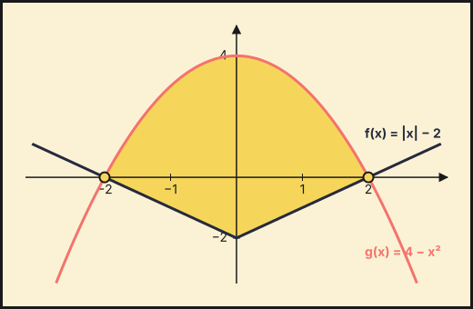
Puntos de corte: \((-2,0)\) y \((2,0)\). El recinto está limitado por arriba por la parábola \(g(x)=4-x^2\) (vértice \((0,4)\)) y por abajo por la «V» \(f(x)=|x|-2\) (vértice \((0,-2)\)), entre \(x=-2\) y \(x=2\).
b) Por simetría:
\[A=2\int_0^2\bigl[(4-x^2)-(x-2)\bigr]dx=2\int_0^2(6-x-x^2)\,dx=2\left[6x-\tfrac{x^2}{2}-\tfrac{x^3}{3}\right]_0^2=2\cdot\tfrac{22}{3}.\]
\(A=\dfrac{44}{3}\ \text{u}^2\)
Extraordinaria 2021
Ejercicio 4 · Extraordinaria 2021 · Bloque A · (2,5 puntos) · Examen
Considera la función \(f\) definida por \(f(x)=\dfrac{x^{2}+1}{x^{2}-1}\) (para \(x\neq -1\), \(x\neq 1\)). Halla una primitiva de \(f\) cuya gráfica pase por el punto \((2,4)\).
\(f(x)=\dfrac{x^2+1}{x^2-1}=1+\dfrac{2}{x^2-1}=1-\dfrac1{x+1}+\dfrac1{x-1}\).
\[F(x)=x+\ln|x-1|-\ln|x+1|+C=x+\ln\left|\frac{x-1}{x+1}\right|+C.\]
\(F(2)=2+\ln\frac13+C=4\Rightarrow C=2+\ln3\).
\(F(x)=x+\ln\left|\dfrac{x-1}{x+1}\right|+2+\ln3\)
Extraordinaria · Reserva 2021
Ejercicio 4 · Extraordinaria · Reserva 2021 · Bloque A · (2,5 puntos) · Examen
Calcula \(\displaystyle\int_{1}^{3}\left|x^{2}-3x+2\right|dx\).
\(x^2-3x+2=(x-1)(x-2)\): es \(\le0\) en \([1,2]\) y \(\ge0\) en \([2,3]\). Con \(F(x)=\frac{x^3}{3}-\frac{3x^2}{2}+2x\): \(F(1)=\frac56\), \(F(2)=\frac23\), \(F(3)=\frac32\).
\[\int_1^3|x^2-3x+2|\,dx=-\bigl(F(2)-F(1)\bigr)+\bigl(F(3)-F(2)\bigr)=\tfrac16+\tfrac56.\]
Resultado: \(1\)
Extraordinaria · Suplente 2021
Ejercicio 4 · Extraordinaria · Suplente 2021 · Bloque A · (2,5 puntos) · Examen
Considera la función \(f:[0,+\infty)\to\mathbb{R}\) definida por \(f(x)=xe^{x}\).
Esboza el recinto limitado por la gráfica de \(f\) y las rectas \(x=2\), \(y=x\). (1 punto)
Determina el área del recinto anterior. (1,5 puntos)
a) Para \(x\ge0\) se cumple \(xe^x\ge x\) (igualdad sólo en \(x=0\), pues \(xe^x=x\iff x(e^x-1)=0\)). El recinto está entre \(y=x\) (debajo) y \(y=xe^x\) (encima), desde \(x=0\) hasta \(x=2\). Ambas curvas parten de \((0,0)\); en \(x=2\) valen \(2\) y \(2e^2\).
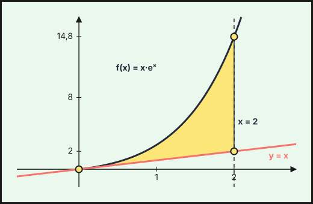
b) Una primitiva de \(xe^x\) es \((x-1)e^x\) (por partes):
\[A=\int_0^2(xe^x-x)\,dx=\left[(x-1)e^x-\tfrac{x^2}{2}\right]_0^2=(e^2-2)-(-1).\]
\(A=e^2-1\approx6{,}389\ \text{u}^2\)
También trabajan este tema
Ejercicios cuyo tema principal es otro pero en los que aparece este tema:
- 2026 Ordinaria · Suplente 2, ejercicio 1 (tema principal: Aplicaciones de la derivada)
- 2026 Extraordinaria · Suplente 1, ejercicio 2 (tema principal: Aplicaciones de la derivada)
- 2023 Ordinaria, ejercicio 4 (tema principal: Límites y continuidad)
- 2021 Ordinaria, ejercicio 3 (tema principal: Aplicaciones de la derivada)
- 2021 Ordinaria · Reserva, ejercicio 3 (tema principal: Aplicaciones de la derivada)
- 2021 Extraordinaria, ejercicio 3 (tema principal: Aplicaciones de la derivada)
- 2021 Extraordinaria · Reserva, ejercicio 3 (tema principal: Derivadas)
- 2021 Extraordinaria · Suplente, ejercicio 3 (tema principal: Aplicaciones de la derivada)
Enunciados: Prueba de Acceso y Admisión a la Universidad (PEvAU hasta 2024, PAU desde 2025), Matemáticas II, Andalucía, Ceuta, Melilla y centros en Marruecos (Distrito Único Andaluz). Cada ejercicio enlaza al PDF del examen completo. La clasificación por temas es propia y puede discutirse: los ejercicios mixtos figuran en su tema principal.